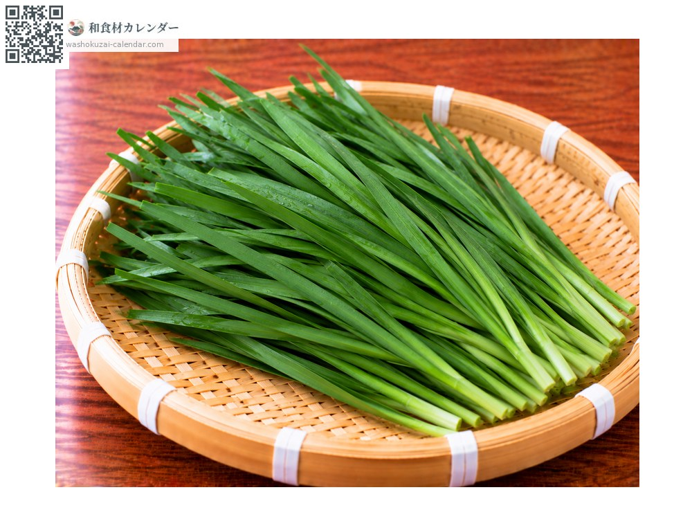
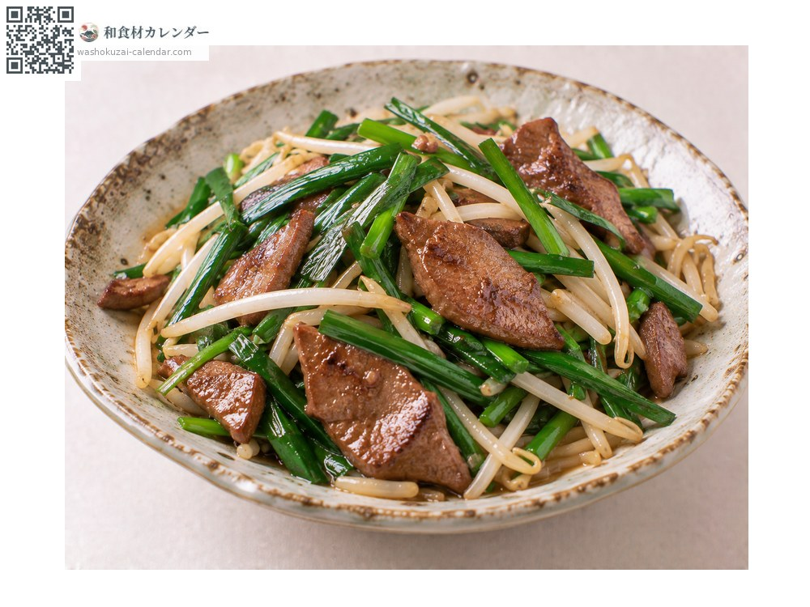
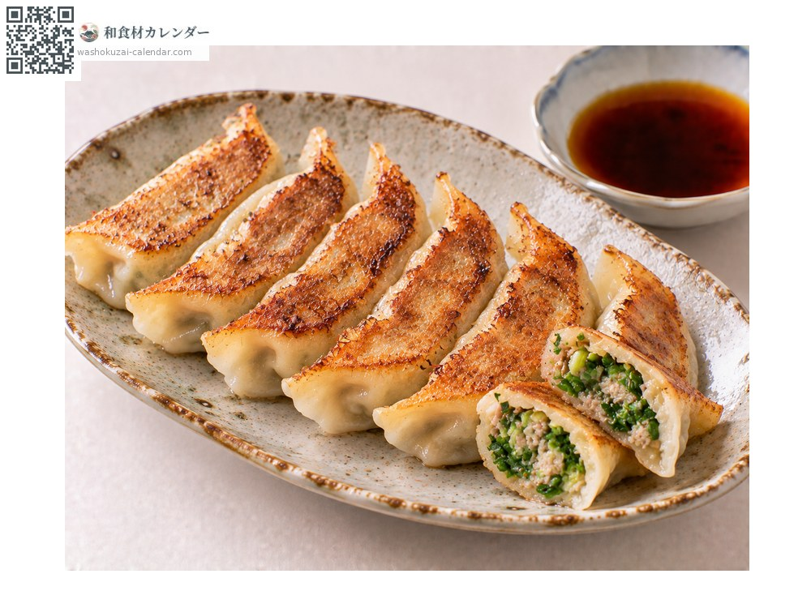
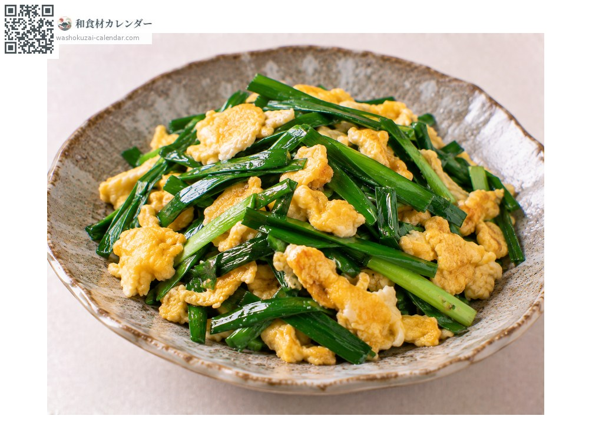
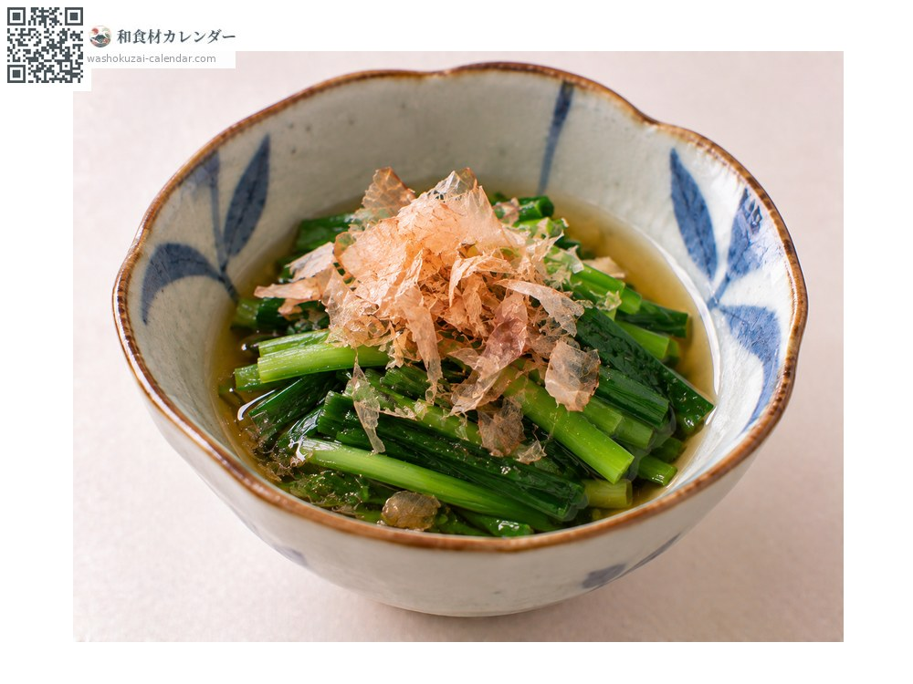

蔬菜
韭菜
ニラ にら nira
别名nira
应季时期为3月、4月、5月

应季时期
1月
2月
3月
4月
5月
6月
7月
8月
9月
10月
11月
12月
应季有供应
烹饪方法

韭菜炒猪肝
与猪肝大火快炒，香气四溢。

饺子
切碎拌进馅里，是经典组合。

韭菜炒蛋
与蛋一起炒，迅速起锅。

烫青菜
快速焯水后浸在高汤里。
挑选方法
叶片肥厚宽阔、颜色深绿。根部的白色部分结实。
保存方法
不耐干燥。用湿纸包好直立冷藏，两到三天内用完。
主要产地
小知识
割过之后会从根株再长出来，一年可以采收好几次。初春的第一茬叶子柔软、香气温和，评价最高。在中国自古就被当作药草使用。